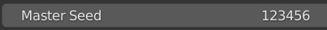
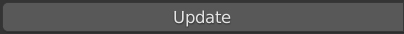
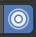
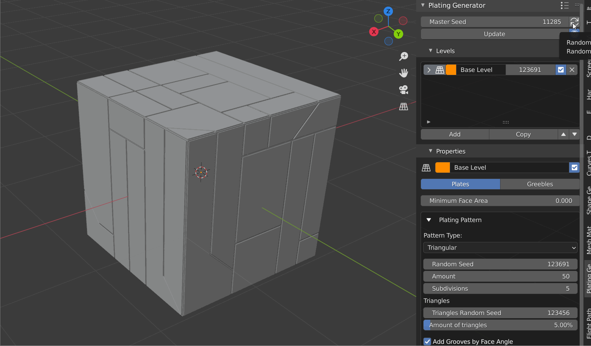

When using a Non Destructive Workflow, if you select a plating object the Plating Generator Panel will show the parameters for the object. This panel is on the right hand side of the viewport. If this is not visible, press the n key in the viewport to display Blender’s properties panel, and select the Plating Generator side tab:
These control the overall randomisation for the Plating Generator and whether to automatically update the object when parameters are changed:

The Master Seed Controls the randomisation of all the Generator code and will change what the Plating object looks like within the parameters of the add-on.
This button will change the master seed parameter at random so you can quickly try out different variations.

This button will update the object with the parameters specified in the panel.

When turned on, any parameter changed in the Plating Generator panel will automatically update the object. If switched off, you will need to manually press the Update button to update the selected object.

Auto Update on while randomly changing the main seed.